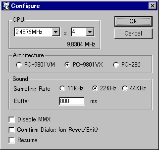

CPUスピードのベースクロックを指定します。
1.9968で 4/8MHz系、 2.4576で 5/10MHz系になります。
CPUスピードは この値に倍率を掛けた物になります。
※設定変更はリセット後に有効になります。
CPUスピードの倍率を決めます。
CPUスピードは この値にベースクロックを掛けた物になります。
※設定変更はリセット後に有効になります。
エミュレーションモデルを指定します。
・PC-9801VX … i286以降のCPUを搭載向け仕様となります。システム起動時にFM音源がリセットされます。
・PC-286 … EPSON互換機仕様となります。EPSON BIOSで使用されるRAM(アドレス: D4000〜DFFFF)が開放されます。
サウンドエミュレートの出力サンプリング周波数を指定します。
一般に設定値高いほど再現率が高くなりますが、CPUパワーが必要になります。
※設定変更はリセット後に有効になります。
サウンドエミュレートの出力バッファサイズをミリ秒で指定します。
100〜1000msの間を指定してください。
値が少ないほどサウンドの延滞が短くなりますが、CPUパワーが必要になります。
通常は200ms〜500msを指定します。
※設定変更はリセット後に有効になります。
チェックすると MMX命令を使用しません。
チェックすると リセット・終了時に確認ダイアログを表示します。
チェックすると レジューム機能が有効になります。